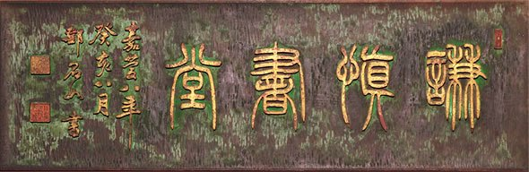

謙慎書道会とは
謙慎書道会は、明治･大正屈指の大家、西川春洞の系統を中心とする団体です。
『謙慎』とは、西川春洞の堂号に由来するもの。

会の概要
| 名称 | 謙慎書道会 |
|---|
| 名称の由来 | 西川春洞の堂号『謙慎』に由来 |
|---|
| 系統 | 明治･大正屈指の大家、西川春洞の系統を中心とする団体 |
|---|
| 創立 | 昭和8年（1933）5月 |
|---|
| 創立者 | 西川寧・林祖洞・江川碧潭・鳥海鵠洞・金子慶雲 |
|---|
| 第1回展 | 昭和8年7月（東京府美術館） |
|---|
| 部門 | 漢字・かな・篆刻の三部門
（篆刻部は第4回展で設置、かな部は昭和57年に新設） |
|---|
| 基本理念 | 古典を尊重し、古典に学び、古典に立脚した学書の姿勢で書の本質を追及する |
|---|
| 事務局 | 〒102-0072 東京都千代田区飯田橋3-2-4 UNOビル4階
TEL：03-3221-1136／FAX：03-3221-1138 |
|---|
創立までの歩み
| 年 | 事項 |
|---|
| 明治37年 | 西川春洞門の高弟達による謙慎同窓会創立
首唱 諸井春畦、豊道春海、武田霞洞等12名 |
|---|
| 昭和5年 | 謙慎書道会の前身、春興書道会創立 |
|---|
| 昭和8年5月 | 西川寧・林祖洞・江川碧潭・鳥海鵠洞・金子慶雲により謙慎書道会創立 |
|---|
| 昭和8年7月 | 第1回展開催（東京府美術館） |
|---|
現在の役員
| 顧問 | 新井光風、田中節山 |
|---|
| 会長 | 髙木聖雨 |
|---|
| 総務 | 市澤静山、師田久子、関吾心、内藤富卿、吉澤大淳 |
|---|
| 理事長 | 牛窪梧十 |
|---|
| 副理事長 | 角元正燦 |
|---|
| 事務局長 | 有岡〓崖 |
|---|
2026年10月現在。常任理事・理事を含む一覧は組織・役員をご覧ください。
歴代理事長
| 代 | 氏名 | 備考 |
|---|
| 初代 | 青山杉雨 | 昭和36年就任。副理事長に殿村藍田・上條信山 |
|---|
| 第二代 | 淺見筧洞 | |
|---|
| 第三代 | 成瀬映山 | |
|---|
| 第四代 | 新井光風 | 平成16年就任 |
|---|
| 第五代 | 樽本樹邨 | 平成23年就任 |
|---|
| 第六代 | 髙木聖雨 | 平成27年就任 |
|---|
| 第七代 | 牛窪梧十 | 令和7年就任 |
|---|
会のあゆみ
| 時期 | 期間 | 主なできごと |
|---|
| 第一期 | 昭和8年の創立〜大戦終結 | 西川寧ら5人の集団的指導態勢で始まる。第4回展で西川寧の提唱により篆刻部を設置。終戦後は西川寧が築地本願寺で書談会を開き、碑学的伝統を守る。 |
|---|
| 第二期 | 戦後〜昭和36年 | 会員構成が今日のような理事制を敷くまでの時期。 |
|---|
| 第三期 | 昭和36年〜 | 青山杉雨が初代理事長、副理事長に殿村藍田・上條信山。強力な指導体制のもと発展。昭和57年にかな部を新設し、漢字・かな・篆刻の三部門となる。 |
|---|
| 第四期 | 〜平成19年 | 淺見筧洞が第二代、成瀬映山が第三代理事長に就任。平成18年に淺見筧洞、平成19年に成瀬映山・小林斗盦が逝去。 |
|---|
| 平成16年以降 | 平成16年〜現在 | 新井光風が第四代理事長に就任し、第70回展記念「日中書法の伝承」展を開催。第五代理事長 樽本樹邨のもと、第77回展で「文字の動物園」を開催するなど書の普及に注力。 |
|---|
会の歴史を読む
その後戦前の空白を経て、春洞の息 西川寧の書と深い学殖を背景に、卓越した理念のもと謙慎の指標となり、所謂－西川イズム－が生れました。
また後継者青山杉雨の登場により大所高所に立っての見地から、作品追求と政治的視野を広げ、かつてない黄金時代を築きました。後進の育成が功を奏し、若手の台頭には目を見はるものがありました。その情熱こそ、謙慎隆盛の母胎であり、素因といえるものでしょう。
謙慎創立より、現在に到るまでを大別すると、第一期は創立の昭和８年から、大戦終結まで。西川寧等５人の集団的指導態勢で始まり、終戦後は独り西川寧のみ世の敗戦の痛手にも関わらず、復興の意思強く、築地本願寺にて書談会を開き、書道界の木鐸として碑学的伝統を守りました。第４回展のときには、西川寧の提唱により篆刻部を設置しました。
次いで戦後から会員構成が今日のような理事制を敷く昭和３６年までを第二期とし、第三期は青山杉雨が初代理事長となり、副理事長には殿村藍田、上條信山を擁し、その強力な指導体制のもと、いよいよ発展の一途を辿ることになります。昭和５７年には、かな部も新設され、謙慎書道会の活動分野が漢字・かな・篆刻の三部門となりました。
第四期は、浅見筧洞が第二代理事長に就任、その後、成瀬映山が第三代理事長としてその重責を全うしました。第１回展より出品をしていた淺見筧洞は平成１８年逝去、最高顧問であった成瀬映山、小林斗盦も平成１９年に相次いで急逝し、偉大な指導者が旅立たれました。
平成１６年より第四代理事長に就任した新井光風は、第70回展記念「日中書法の伝承」展を開催。古典の重要性を示唆し、書の本質を再認識させる機会として、後世に残る企画となりました。第五代理事長には樽本樹邨が就任。東京都美術館のリニューアルに伴い様々な催しを企画、第77回展では「文字の動物園」を開催するなど、書の普及に力を注ぎました。
平成２７年には髙木聖雨が第六代理事長に、令和７年には牛窪梧十が第七代理事長に就任しました。
現在、顧問 新井光風、田中節山、会長 髙木聖雨、総務 市澤静山、師田久子、関吾心、内藤富卿、吉澤大淳、理事長 牛窪梧十、副理事長 角元正燦、事務局長 有岡〓崖という新しい陣容は、類を見ない伝統と歴史を受け継ぎ、謙慎の基本理念である古典を尊重し、古典に学び、古典に立脚した学書の姿勢で書の本質を追及し、着実に一歩一歩前進をしています。
沿革（年譜）
昭和8年（1933）の創立から現在までのあゆみは、歴史（年譜）のページでご覧いただけます。
組織・役員
役員・常任理事の一覧は、組織・役員のページでご覧いただけます。
関連ページ